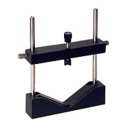

7.3.4. Newton rings.¶
Download Python script: NewtonRings.py

Sir Isaac Newton, (Woolsthorpe-by-Colsterworth, 1643 – Kensington, 1727).¶
When Newton was experimenting with light and lenses he observed a dark spot on the lens which was on a glass plate. Closer inspection showed a set of alternating dark and light concentric rings. Newton analyzed this wave phenomenon although he was a supporter of the corpuscular theory of light.
Newton rings can be observed when a spherical glass surface lies on a flat glass. The reflections of a beam of light reflected from these surfaces will show an interference pattern. In these experiments the radius of curvature of the lens will be measured and the influence of replacing the refractive index of the film between the two glass surfaces will be investigated.

Newton rings setup.¶

Screenshot of the Newton rings program.¶
Download Python script: NewtonRings.py
7.3.4.1. Measurement of the radius of curvature of the lens.¶
How can the radius of curvature of the lens be determined if the diameters of the rings in the interference pattern are known? Derive an equation.
Choose a value for the wavelength of the (monochromatic) light beam.
Measure the diameters of the rings and plot the diameter as a function of the ring-number. (Plot as a straight line, don’t forget the experimental errors (draw error bars!) ).
Repeat 2 and 3 for a few (about 3) other values of the wavelength.
Determine the radius of curvature of the lens for all wavelengths chosen and check if the measured lens-radii are equal within experimental error.
7.3.4.2. Measurement of the refractive index of the film between the lens and the flat plate.¶
Replace the air between the plate and the lens surfaces with a transparent medium with index larger than one. Find the value of the refractive index of this medium by measuring the diameters of the Newton rings.
7.3.4.3. Questions about Newton rings.¶
What happens if the beam of light is not monochromatic but contains a large number of wavelengths?
What type of fringes are the Newton rings. Explain why you need a lens to observe the interference pattern.
What will happen with the fringes when the lens is deformed by pressing the edges of the lens?
One can use the Newton rings set-up to inspect the quality of the lens surface, deviations from the spherical (or aspherical) surface will become visible. How can you enhance the accuracy of this inspection method?
Usually lenses are mounted in holders in an optical experiment. Never use a lens holder where the lens is clamped with a screw, but mount the lens with a ring instead. Explain why.

|

|
Good with ring mounting |
Less good using screw mounting |